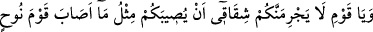
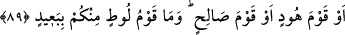

1- Mübtedînin/yolun başında olanın tevekkülü ki bu, geçim sağlama konusunda
sebepleri terk etmektir.
2- Mütevassıtın/yolun ortasında olanın tevekkülü ki bu da Allah’la birlikte yaşamada
geçimi terk etmektir.
3- Müntehînin/yolun sonunda olanın tevekkülü ise kendi varlığını Allah’ın varlığında
tüketmektir. Kendisi olmaksızın O’nun hüviyyetinde bâkî olmak için her şeyde tasarruf
sâhibi olanın O olduğu bilinciyle kendi ihtiyarını (irâdesini) O’nun ihtiyârında ifnâ
etmektir. Tasarruf ve sebepleri sadece Müsebbibü’l-esbâb’dan/sebepleri var edenden
görmektir.
et-Te’vîlâtü’l-Kâşâniyye’de şöyle der: “Tevhid mertebelerinin ilki, tevhîd-i ef‘âl,
sonra tevhîd-i sıfât, sonra da tevhîd-i zâttır. Çünkü zât sıfatlarla, sıfatlar fiillerle, fiiller
ise eserlerle ve oluşlarla gizlenmiş, perdelenmiştir. İşte bu oluş hicâblarının ortadan
kalkması ile kendisinde fiillerin tecellî ettiği kimse tevekkül eder. Fiil hicâblarının
ortadan kalkması ile kendisinde sıfatların tecellî ettiği kimse râzı ve teslîm olur. Sıfat
hicâblarının ortadan kalkması ile kendisinde zâtın tecellî ettiği kimse ise artık
vahdettedir. Mutlak olarak muvahhid olur.”
Mesnevî’de şöyle denilir:
Sen “Lâ ilahe illallah” demedikçe
Hakîkate varan açık yolu bulamazsın
Aşk öyle bir ateştir ki, alevlenince,
Sevgiliden başka ne varsa hepsini yakar, yandırır.
“Lâ” kılıcı, Hak’tan gayrısını keser, siler süpürür.
Bir bak da gör, “Lâ”(yok)dan sonra ne kaldı?
Ancak “illallah” kaldı, hepsi de gitti, yok oldu.
Ey şirki, ortaklığı yakıp yandıran aşk, şâd ol, yaşa!
Şu halde akıllıya düşen hakiki tevhid makamına ulaşana dek sâlih amellerle ve faydalı
zikirlerle Hak yolunda çalışmak, bu makama ulaştıktan sonra nasihat ve dâvet yolunda
peygamberlerin ve kâmil velilerin izini tâkip etmek, sırf Muhammedîleri çoğaltmak,
dünyanın temel direklerini adâletle düzeltmek ve insanları en doğru yola sokmak
gâyesiyle sadece düzeltme ve ıslâhtan başkasını istememektir. İrşâdın tesirini halk
edecek olan Allah’tır. Her şeyin mebdei, kaynağı odur; dönüş ve varış da O’nadır.
89. “Ey kavmim, sakın bana karşı gelmeniz sizi Nûh kavminin veya Hûd kavminin